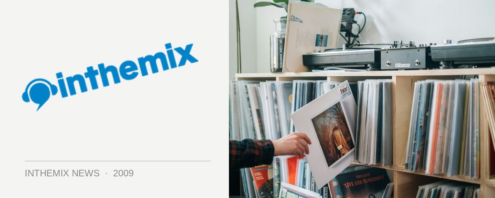

The Revenge reach Australia this weekend
The Revenge AKA Graeme Clark is on his way to Australia this weekend, and he’ll be touring off the back of some smashing re-edits released on Mark E’s notorious Jisco label, that’s included Hot Chocolate’s Heaven Is In The Backseat Of My Cadillac, Stevie Wonder’s Love Light In Flight as well as Unfinished Business Love Coming On.
Other projects on the boil for 2009 will include his new vinyl-only label Instruments Of Rapture, a collaboration with Craig Smith on Jimpster’s label, a remix for Phonica’s new imprint and much more. Check out Graeme AKA The Revenge is all about when he lands in Australia this weekend.
The Revenge tour dates:
22nd May – Sorry Grandma, Melbourne
23rd May – Co-op w/ Motor City Soul, Sydney
24th May – Picnic Sunday Social Warehouse Party, Sydney
29th May – Surfer’s Paradise Garage, Gold Coast
30th May – Sugar, Adelaide